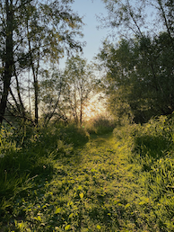

Crobsche Waard
De Crobsche waard is een bijzonder en uniek natuurgebied met een grote diversiteit aan planten- en diersoorten. Gelegen in de uiterwaarden bij Haaften is het krekengebied ontstaan door kleiwinning voor de plaatselijke baksteenindustrie. Ten gevolge van die activiteit ontstonden er kleine en grotere waterpartijen, inmiddels omzoomd door een groene muur van wilg en zwarte els. Op die manier is het deel ten noorden van “de kardam” een doolhof van kleine groene paradijsjes. Binding met de omgeving kenmerkt zich ook door de voormalige zwembadput en de ijsbaan. Deze laatste wordt nog beheerd door een actieve ijsclub met de toepasselijke naam “de IJsvogels”. Een klein blauw vogeltje met een typische snelle vlucht, dat ook in het gebied voorkomt. Opvallend zijn verder de kolonies aalscholvers, blauwe reigers en lepelaars. En sinds 2014 een jaarlijks terugkerende familie Ooievaars. De Crobsche Waard ligt ten westen van het dorpje Haaften tussen de Waalbandijk en de Waal. Bij de ijsbaan en de voormalige zwembadput is een klein parkeerterreintje. Ook vanuit het centrum van Haaften is het terrein gemakkelijk te voet bereikbaar. Er lopen diverse wandelpaden o.a. langs de Waal en de zuidelijke plas; “de beslagput”. Een deel van het krekengebied is vanwege de waterstand niet toegankelijk/opengesteld.